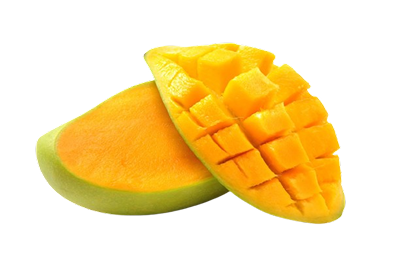

Detail Produk

 30 (reviews)
30 (reviews)
Mangga Segar
30 (reviews)
1/2 kg
Categori : Buah
Nikmati kelezatan buah mangga segar yang dipetik langsung dari kebun. Mangga ini memiliki daging buah yang manis, lembut, dan kaya akan vitamin C, sangat cocok untuk dinikmati langsung, dibuat jus, atau sebagai bahan tambahan dalam berbagai hidangan. Dengan kulit berwarna hijau kekuningan yang menandakan kematangan sempurna, mangga ini memiliki rasa yang seimbang antara manis dan sedikit asam, memberikan sensasi segar di setiap gigitan.